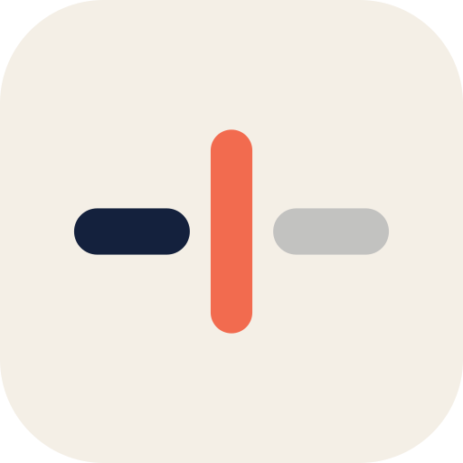
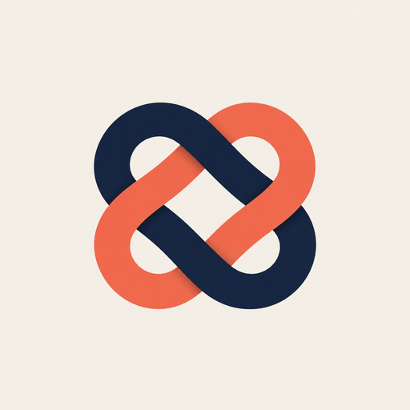
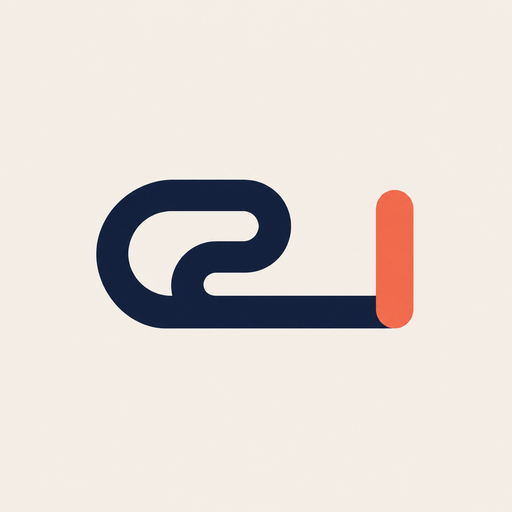
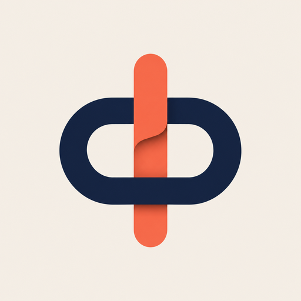
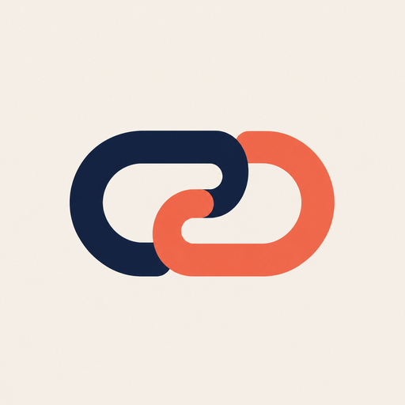

Itda logo, round 2
Round 1 picks: G's colours, J's complexity. John: "I like G's brighter colors but it's still too oversimplified I think. J has some more complexity, which i like. let's take some more variants from there."
Where we started
GRound 1 G

The colours you liked: paper, ink and a coral caret.
JRound 1 J

The complexity you liked: two strokes joining. Its catch: it reads as the hyperlink icon.
Drawn options (vector, ready to build)
LWoven loops
Two rounded loops at ±45°, over and under at all four crossings. Joined, balanced, not a chain. Drawn from image idea Q. Recommended.
MWoven loops on ink
L reversed: paper and coral strands on today's ink blue. Keeps continuity with the shipping icon and sits better in a dark Dock.
NTwo hooks holding
Two open hooks, each holding the other. Joined, but with no closed loop, so no chain. The simplest of the new ones; reads as an S at 16 px.
OBraid
Two strands crossing twice: ink over, then coral over. Says "joined" best; wide and short, so it fills the tile less.
PHandwriting into a caret
One ink stroke loops like handwriting, runs into a line, and a coral caret takes over. Closest to what the app does; reads as "el" at a glance.
Image ideas (Codex's image tool, G and J as references)
Images, not builds: each note says what's worth taking into a drawn version.
QWoven knot

The best image this round, and the source of L. Thicker ribbons and a soft shadow at the crossings: worth trying on L if it looks thin.
RLoop into caret

The same idea as P, but small and off-centre. P is the cleaner version.
SRing threaded by the caret

A coral caret through an ink ring, with a little paper-fold depth. Strong, but it reads as Φ: take the fold, not the shape.
THooked links

Back to a chain link. Skip.